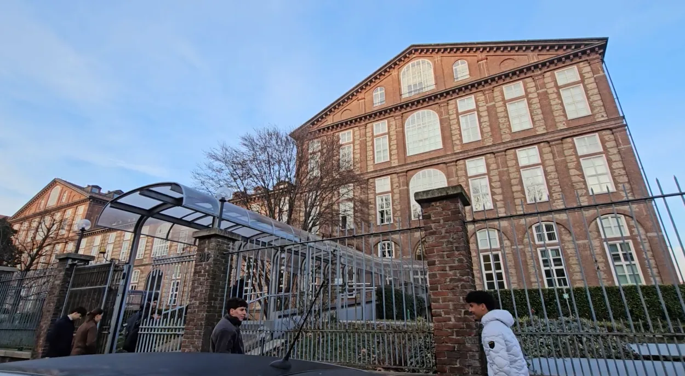
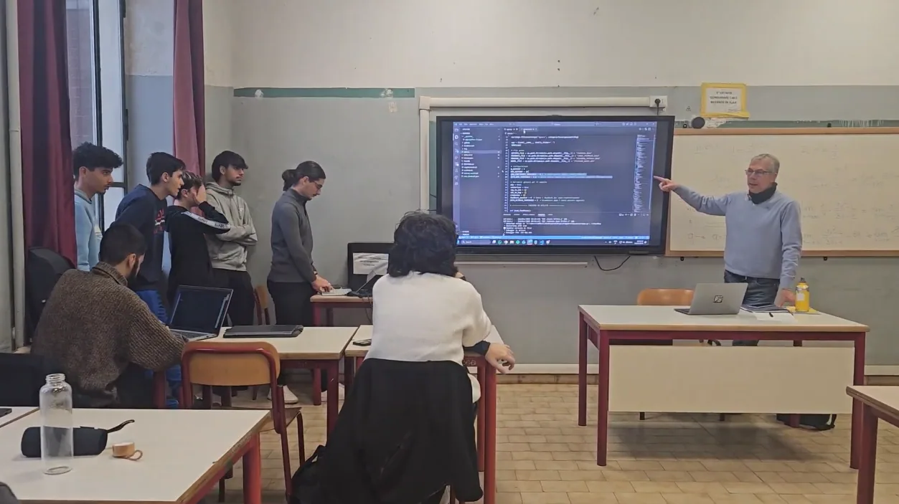
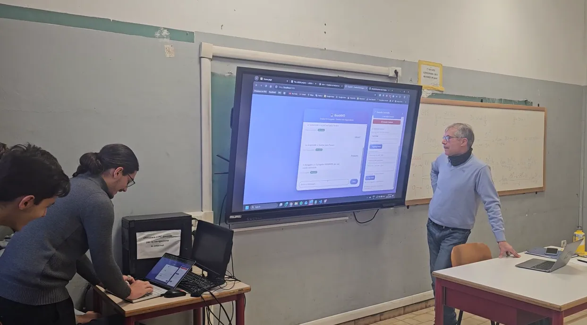
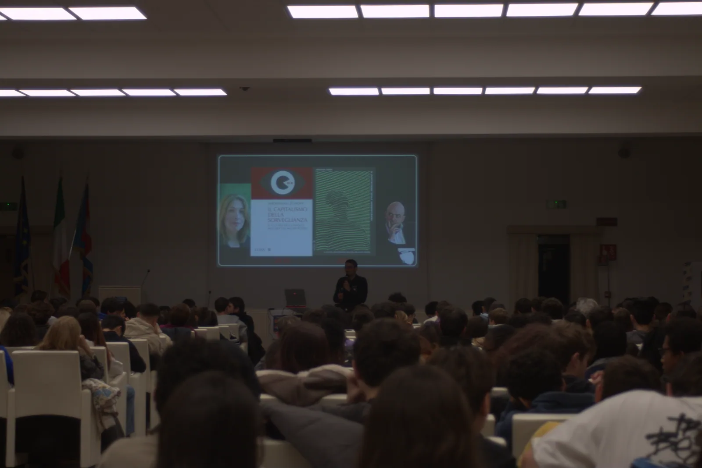
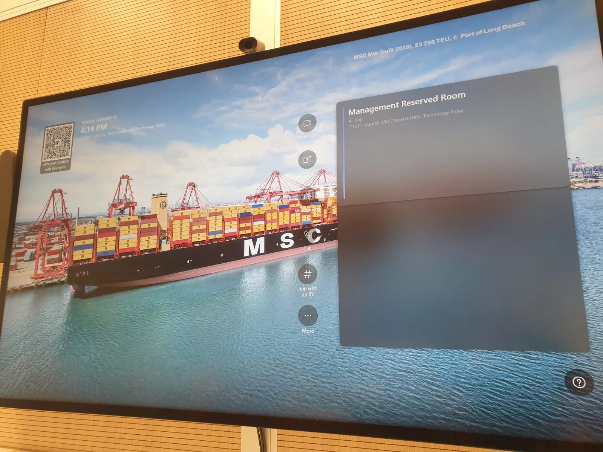

Presentazione del percorso formativo presso CSI Piemonte
I momenti salienti dei laboratori formativi al CSI Piemonte e il seminario su AI e sicurezza.
Kickoff iniziale con i tutor aziendali, analisi delle esigenze di orientamento scolastico e definizione delle feature chiave di GustAvo.
Attività di programmazione e collaudo nei laboratori dell'IIS Amedeo Avogadro: strutturazione del dataset intents.json, addestramento del modello Scikit-learn e test del frontend.



Incontro formativo sui temi dell'Intelligenza Artificiale con la Polizia di Stato, con dibattito e sessione di interviste condotte dagli studenti.



Le foto dell'incontro degli studenti con MSC.


